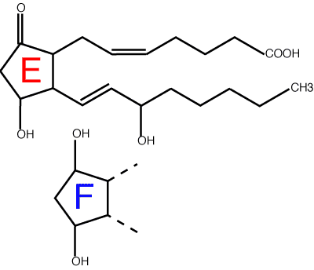

NSAIDs = non-steroidal anti-inflammatory drugs. Usually only includes drugs thought to have a similar mechanism of action to aspirin, although there are many other drugs which are anti-inflammatory but are not steroids.
NSAIDs (sometimes called aspirin like drugs) are a very large group of drugs of diverse chemical structure with the common property of inhibiting cyclo-oxygenase, and thus reducing prostaglandin production. Prostaglandins perform many functions in the body, including mediating inflammation and sensitising peripheral nerve endings.There are other groups of anti-inflammatory drugs which are also not steroids - I have referred to them as anti-arthritis drugs. All anti-inflammatory drugs are covered in more detail in Chapter 7.

Prostaglandin names: prostaglandin E2 (top) and F (bottom). The the letter refers to the substituents on the ring: the 2 refers to the number of double bonds.
Effects
Mechanism of action
Side effects
Drugs
Pharmacokinetics
Clinical uses
Precautions
Lees, May and McKellar (1991) Pharmacology and therapeutics of non steroidal anti-inflammatory drugs in the dog and cat: 1 and 2. Journal of Small Animal Practice, 32, 183 - 193 & 225 - 235
A comprehensive review but becoming dated.
J M Seager and C J Hawkey (2001) Indigestion and non-steroidal anti-inflammatory drugs. BMJ 323:1236-1239
A useful review of NSAID induced ulcers and management in people. Remember species differences!
Hinz B. Brune K. (2002) Cyclooxygenase-2--10 years later. Journal of Pharmacology & Experimental Therapeutics. 300:367-75
A more scientific review.